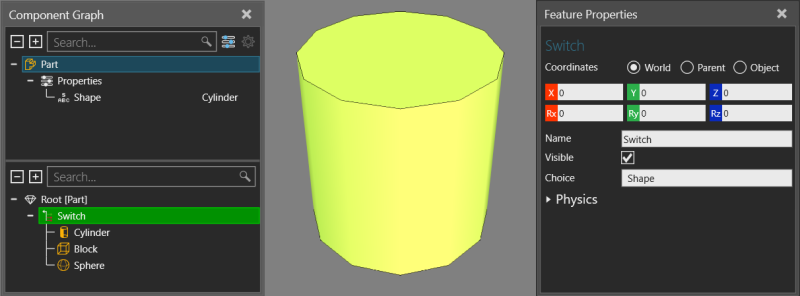
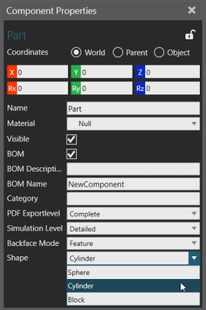

A Switch feature selects one of its child features and disables the other child features.

Switch operations are helpful if you need to switch out geometry or other operations based on component properties.

| Name | Description |
| Name | Defines the name of the switch. |
| Choice | Defines an expression that when evaluated selects a child feature
depending the type of the returned value.
Boolean Integer Real String |
| Physics | Defines a set of physics properties for the feature. |